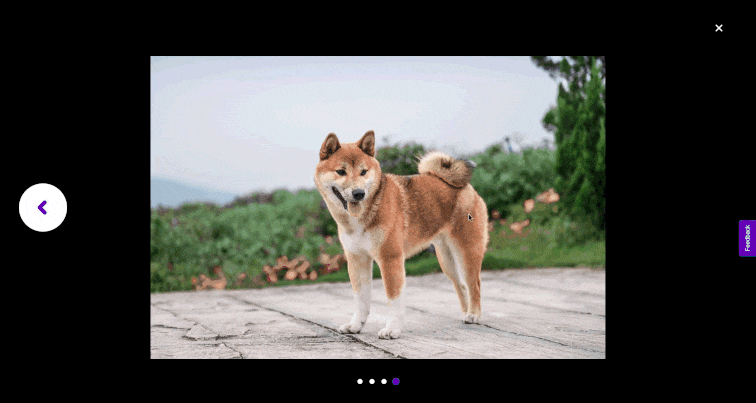
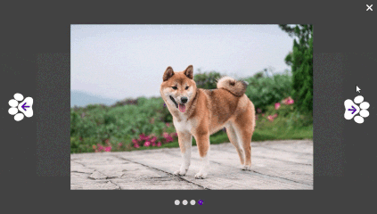

URL TO USER INTERFACE
TRIGGERS
Object 1 -
Main image positioned slightly to the
right of the page’s center.
Hover On
Hover Off
Click
Object 2 -
Arrows located on the left-center and
right-center side of the display.
Hover On
Hover Off
Click
Object 3 -
The "X" close icon positioned in the
top right corner of the display.
Hover On
Hover Off
Click
RULES
Object 1
Hover On
The cursor visually changes to a hand icon, signaling that the main image
is clickable.
Hover Off
Cursor changes back to an arrow.
Click
When the main image is clicked, it moves up and down and up by 10 degrees
(y-axis) in 0.15 seconds.
The active image enlarges and centers on the screen for focused
viewing within 0.5 seconds.
A black overlay of 80% opacity (#000000) fades in within 0.5 seconds.
Navigation arrows and a close (“X”) icon fade in for browsing and exiting
the lightbox in 0.15 seconds
Object 2
Hover On
When hovered, the cursor changes to a hand icon over the navigation arrow
paws, indicating that they are clickable.
The navigation arrow paw rotates by 15 degrees when hovered on in 0.35 seconds.
Hover Off
Cursor changes back to an arrow.
The navigation arrow paw rotates back to its original state in 0.35 seconds.
Click
Clicking the right arrow paw transitions to the next image in the sequence, as
the current image slides off to the left in 0.5 seconds.
The left paw arrow will only be active and visible if it has a previous image to return to.
Clicking the left arrow paw returns to the previous image, as the current image
slides off to the right in 0.5 seconds.
The indicator dots beneath the image change from white to purple in 0.15
seconds to indicate the active photo.
Only one image is displayed at a time. Each new image replaces the
previous one smoothly.
Object 3
Hover On
The cursor visually changes to a hand icon, signaling that the main image
is clickable.
Hover Off
Cursor changes back to an arrow.
Click
The X icon moves vertically by 10 degrees along the y-axis and rotates 15 degrees
within 0.15 seconds.
The lightbox fades out, and the background lightens back to white.
The user sees the original page layout return instantly.
The dark background overlay, navigation arrows, indicator dots, and the
X icon fade out within 0.25 seconds, returning the interface to its original state.
FEEDBACK
Hover On
The cursor visually changes to a hand icon, signaling that the main image
is clickable.
Hover Off
Cursor changes back to an arrow.
The navigation arrow paw rotates by -15 degrees.
Click
The image moves up and down and up by 10 degrees (y-axis) in 0.15 seconds
before enlarging.
The main image smoothly enlarges into a centered view in 0.5 seconds.
A dark overlay fades in behind the image with 80% opacity (#000000) in 0.5
seconds.
Navigation arrows, dots, and the close (“X”) icon fade in around the image
in 0.15 seconds.
Object 2
Hover On
When hovered, the cursor changes to a hand icon over the navigation arrow
paws, indicating that they are clickable.
The navigation arrow paw rotates by 15 degrees when hovered on in 0.35 seconds.
Hover Off
Cursor changes back to an arrow.
The navigation arrow paw rotates back to its original state in 0.35 seconds.
Click
Clicking the right arrow paw transitions to the next image in the sequence,
as the current image slides off to the left in 0.5 seconds.
Clicking the left arrow paw returns to the previous image, as the current
image slides off to the right in 0.5 seconds.
The indicator dots beneath the image change from white to purple in 0.15
seconds to indicate the active photo.
When clicking the navigation arrow paw, it moves up and down by 10 degrees
(y-axis) in 0.15 seconds.
Object 3
Hover On
The cursor visually changes to a hand icon.
Hover Off
Cursor changes back to an arrow.
Click
The X icon moves vertically by 10 degrees along the y-axis and rotates 15 degrees
within 0.15 seconds.
The dim 80% opacity black background fades out in 0.5 seconds, returning to
its original color.
The image shrinks back to its original shape in 0.5 seconds.
The dark background overlay, navigation arrows, indicator dots, and the
X icon fade out within 0.25 seconds, returning the interface to its original state.
LOOPS & MODES (meta-rules)
Loops
None
Modes
The lightbox acts as a mode that alters the user's interaction environment.
Once activated
by clicking the main image, the page dims and a dark overlay of 80% opacity
#000000 fades in by 0.5seconds. The main image increases in size and centers
in the middle, background elements become inactive. New modules such as
navigation arrow paws and a close (“X”) icon appear.
UPDATED OBJECTS
Object 1

Object 2

Object 3
